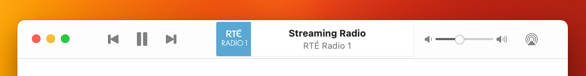
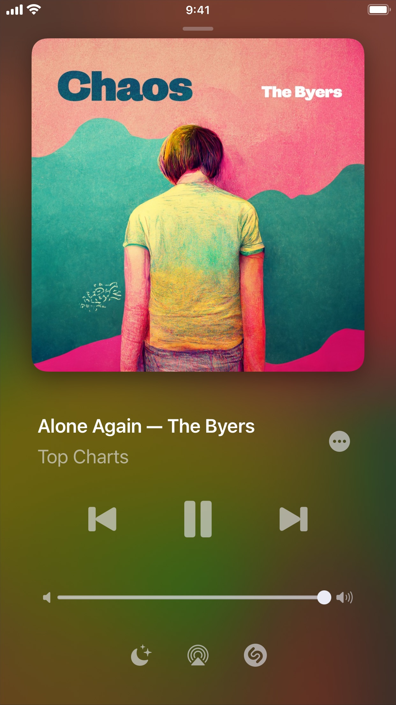
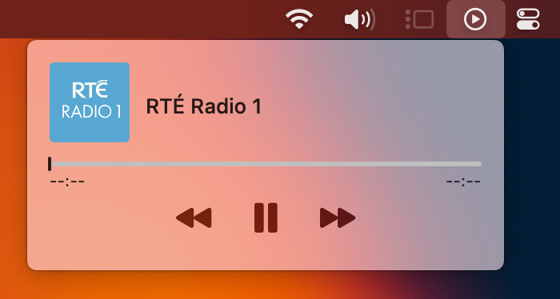

You can play a station in your library by clicking on it, in Grid view mode, or double-clicking in List mode.
On Mac and iPad, in the toolbar of the library window you can find playback controls, metadata, volume control and the AirPlay button. In smaller layouts, the toolbar may shrink its available options to fit.
On iPhone and iPad, you can tap the toolbar to present the Now Playing screen to access more controls, including the Sleep Timer and Shazam, and the Shazam Track History.
On Mac, you can show the MiniPlayer from the menu bar.
The MiniPlayer is similar to the Now Playing screen, but has an additional button () to access your library in List mode.
In the titlebar of the MiniPlayer window, you can choose to have the MiniPlayer Float on Top of other windows by selecting the pin button .
You can resize the MiniPlayer by dragging the bottom edge of the window.
You can use the media keys on your physical keyboard to play and pause stations, and to switch to the next or previous track. If you have a Game Controller, this may also be used to control playback.
Broadcasts also has broad support for keyboard navigation.
Broadcasts also can be controlled from the Lock Screen on iPhone and iPad, from Control Center, and from the Mac menu bar.
On the Mac, the system-provided Now Playing view can be dragged from Control Center into the menu bar, to provide a persistent Now Playing menu that works with all apps (including Broadcasts).
From the macOS Dock, you can right-click or control-click the Broadcasts icon, and choose Play or Pause.
See also: Automation using AppleScript, Shortcuts